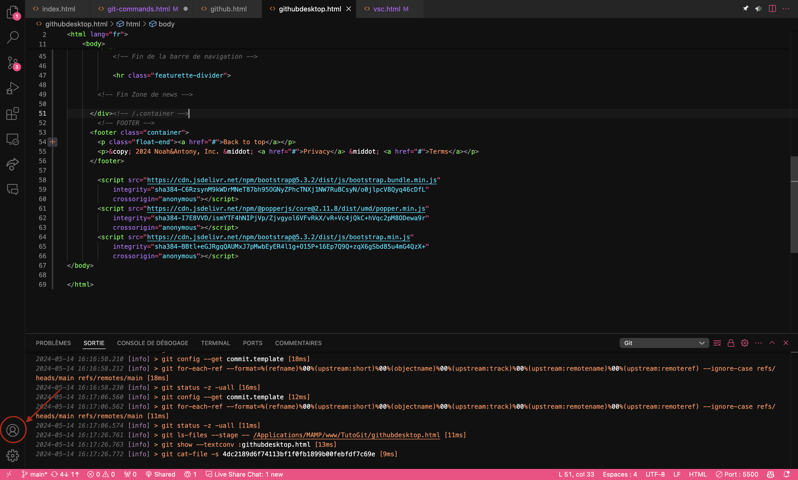
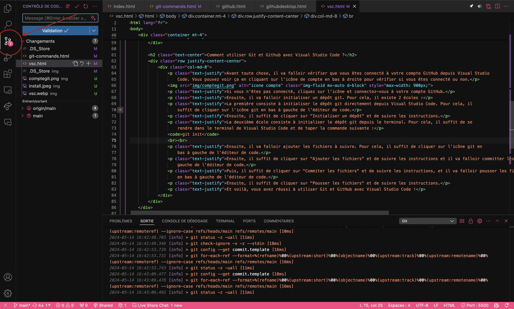

Qu'est-ce que Visual Studio Code ?
Visual Studio Code est un éditeur de code simplifié, qui est gratuit et développé en open source par Microsoft. Il fournit aux développeurs à la fois un environnement de développement intégré avec des outils permettant de faire avancer les projets techniques, de l’édition, à la construction, jusqu’au débogage.
Comment utiliser Git et Github avec Visual Studio Code ?
Avant toute chose, il va falloir vérifier que vous êtes connecté à votre compte GitHub depuis Visual Studio Code. Vous pouvez voir ça en cliquant sur l'icône de compte en bas à droite pour vérifier si vous êtes connecté ou non.
Si vous n'êtes pas connecté, cliquez sur l'icône et connectez-vous à votre compte GitHub.
Ensuite, il va falloir initialiser un dépôt git. Pour cela, il existe 2 écoles :
Initialiser un dépôt git depuis Visual Studio Code
La première consiste à initialiser le dépôt git directement depuis Visual Studio Code. Pour cela, il suffit de cliquer sur l'icône git à gauche de l'éditeur de code.
Ensuite, il suffit de cliquer sur "Initialiser un dépôt" et de suivre les instructions.
Initialiser un dépôt git depuis le terminal
La deuxième école consiste à initialiser le dépôt git depuis le terminal. Pour cela, il suffit de se rendre dans le terminal de Visual Studio Code et de taper la commande suivante :
git init
Il va falloir ajouter les fichiers à suivre. Pour cela, puis de cliquer sur l'icône git en bas à gauche de l'éditeur de code. Après, pour rajouter des fichiers, il faut cliquer sur "Ajouter les fichiers" et de suivre les instructions et il va falloir committer les fichiers. Pour cela, il suffit de cliquer sur l'icône git en bas à gauche de l'éditeur de code. Puis, il suffit de cliquer sur "Commiter les fichiers" et de suivre les instructions, et il va falloir pousser les fichiers sur GitHub. Pour cela, il suffit de cliquer sur l'icône git en bas à gauche de l'éditeur de code. Ensuite, il suffit de cliquer sur "Pousser les fichiers" et de suivre les instructions.
Et voilà, vous avez réussi à utiliser Git et GitHub avec Visual Studio Code !